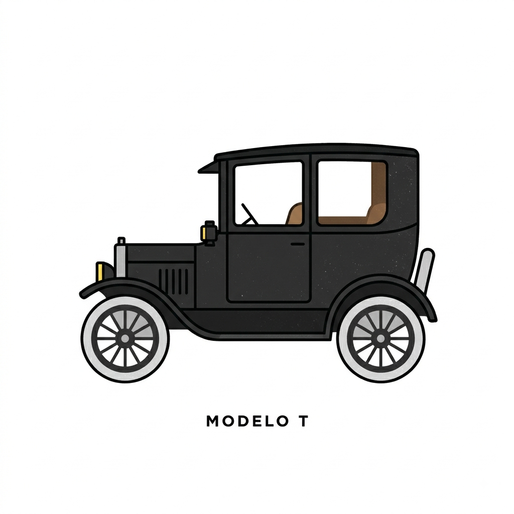

O carro que popularizou os automóveis
Por: Ezequiel Oliveira da Silva
O Ford Modelo T, lançado em 1908, revolucionou a indústria automobilística ao ser o primeiro veículo produzido em linha de montagem acessível às massas.
Fonte: AutoEsporte